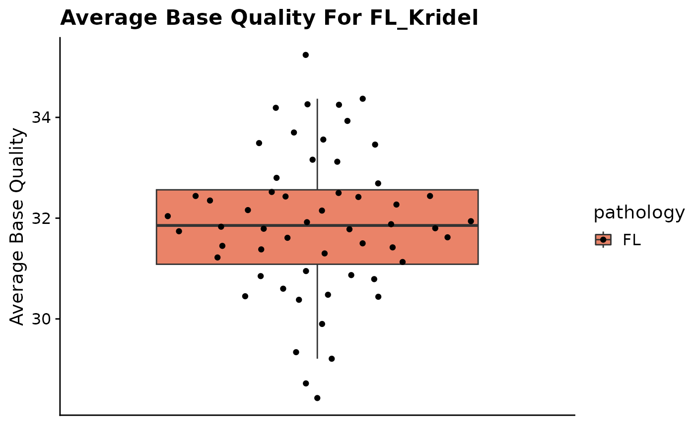

Plot Quality Control Metrics.
fancy_qc_plot.RdPlot for visualizing QC metrics and allowing for grouping by different metadata columns.
fancy_qc_plot(
these_sample_ids,
keep_cohort,
keep_pathology,
seq_type = "genome",
metadata,
these_samples_metadata,
plot_data,
fill_by = "pathology",
labels = c("sample_id", "cohort"),
interactive = FALSE,
comparison_samples,
plot_title = "",
y_axis_lab = "",
return_plotdata = FALSE
)Arguments
- these_sample_ids
Data frame with sample IDs (to be plotted) in the first column (has to be named sample_id).
- keep_cohort
Optional parameter to be used when these_sample is NULL. Calls get_gambl_metadata() and filters on the cohort supplied in this parameter.
- keep_pathology
Optional parameter to be used when these_sample is NULL. Calls get_gambl_metadata() and filters on the pathology supplied in this parameter.
- seq_type
Selected seq type for incoming QC metrics.
- metadata
Optional, user can provide a metadata df to subset sample IDs from.
- these_samples_metadata
GAMBL metadata subset to the cases you want to process.
- plot_data
Plotting parameter, define the data type to be plotted.
- fill_by
Parameter for specifying fill variable for grouped bar plot. Can be any factor from incoming metadata, e.g pathology, cohort, etc.
- labels
If HTML plot version is rendered, you can specify what labels should be visible when hovering over the dots. Default is sample id and cohort. This parameter expects a vector of charachters.
- interactive
Boolean parameter for generating interactive plot (HTML). Default is FALSE.
- comparison_samples
Optional parameter, give the function a vector of sample IDs to be compared against the main plotting group. Pathology is default.
- plot_title
Plotting parameter, plot title.
- y_axis_lab
Plotting parameter, label of y-axis.
- return_plotdata
Optional parameter, if set to TRUE a vector of acceptable data types for plotting will be returned, and nothing else.
Value
A plot as a ggplot object (grob).
Details
This function is readily available for visualizing a variety of quality control metrics. To get started, the user can easily overview all the available metrics with return_plotdata = TRUE.
When this parameter is set to TRUE, a vector of characters will be returned detailing all the, for this plot, available metrics. After deciding what metric to plot, simply give the metric of choice to the plot_data parameter.
This function also lets the user provide a data frame with sample IDs to be included in the plot. Optionally, the user can also provide an already filtered metadata table with sample IDs of interest to the these_samples_metadata.
If none of the two parameters are supplied, the user can easily restrict the plot to any cohort and/or pathology of their liking. This is done by calling keep_cohort and keep_pathology.
If these parameters are used, the function will retrieve metadata for all available GAMBL sample IDs and then subset to the specified cohort or pathology.
The layout of the returned plot can also be further customized with sort_by. This parameter controls the order in which samples would appear. Similarly, fill_by allows the user to control on what factor the plot will be filled by.
In addition, the generated plot can also be returned as an interactive HTML rendering, allowing the user to easily hover over any of the points in the plot and get expanded information on each data point. To toggle this function, set the interactive parameter to TRUE.
If an interactive plot is generated, it is also possible to dictate what information should be available in the plotted data points. Default for this parameter is sample ID and cohort.
Sometimes it can also be useful to see how a subset of samples compares to another group; to do this one could call the function with a vector of additional sample IDs given to the comparison_samples parameter (see examples for more information).
lastly, the plot can also be configured with custom plot title and axis labels (plot_title and y_axis_lab). For more information, see examples and parameter descriptions.
Examples
#Example 1 - using these_sample_ids parameter
#subset on FL cases with QC metrics available and plot
metadata = get_gambl_metadata()
kridel_fl = dplyr::filter(metadata, pathology == "FL",
cohort == "FL_Kridel")
kridel_fl_samples = dplyr::select(kridel_fl, sample_id)
fancy_qc_plot(these_sample_ids = kridel_fl_samples,
plot_data = "AverageBaseQuality",
y_axis_lab = "Average Base Quality",
plot_title = "Average Base Quality For FL_Kridel")
#> /projects/nhl_meta_analysis_scratch/gambl/results_local/shared/gambl_genome_results.tsv
#> QC Metric successfully retreived for 56 samples out of a total of 56 samples in input sample table.
#> Joining with `by = join_by(sample_id, patient_id, biopsy_id)`

#Example 2 - using already filtered metadata (these_samples_metadata)
fancy_qc_plot(these_samples_metadata = kridel_fl,
interactive = TRUE,
labels = c("cohort", "pathology"),
plot_data = "AverageBaseQuality",
y_axis_lab = "Average Base Quality",
plot_title = "Average Base Quality For FL_Kridel")
#> /projects/nhl_meta_analysis_scratch/gambl/results_local/shared/gambl_genome_results.tsv
#> QC Metric successfully retreived for 56 samples out of a total of 56 samples in input sample table.
#> Joining with `by = join_by(sample_id, patient_id, biopsy_id)`
#Example 3 - using in-house metadata filtering options
fancy_qc_plot(keep_cohort = "FL_Kridel",
keep_pathology = "FL",
plot_data = "AverageBaseQuality",
y_axis_lab = "Average Base Quality",
plot_title = "Average Base Quality For FL_Kridel")
#> /projects/nhl_meta_analysis_scratch/gambl/results_local/shared/gambl_genome_results.tsv
#> QC Metric successfully retreived for 56 samples out of a total of 56 samples in input sample table.
#> Joining with `by = join_by(sample_id, patient_id, biopsy_id)`